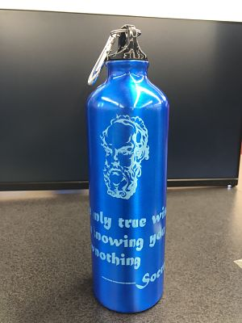

This week I learned the laser cut machine. I made 4 products: a clock, a press fit kit, a bookmark and a waterbottle.
I made a Zelda logo clock, and then I sprayed with black and red to make it look shaper.
This is my press fit kits. There are three types, and each of them fit in each other.

Now, my blue waterbottle with one of the most famous quote from Socrates. I even put his figure on the top.

Zelda again! Zelda logo bookmark with black and white hand paint on it.
Back to index